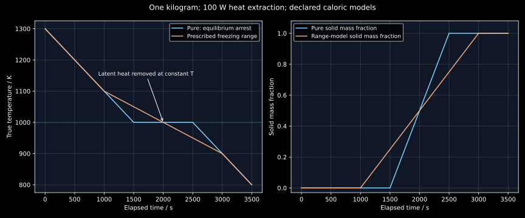

5. Phase amounts, heat flow and the interpretation of cooling curves
A horizontal segment on a cooling curve does not mean that cooling has stopped. Energy can continue leaving a sample while its temperature stays constant because liquid is being converted into solid. Conversely, a smoothly falling temperature does not mean that no transformation is occurring: latent heat can be released over a freezing range. Reading the curve requires an energy balance, a phase model and a description of what the thermometer actually measures.
The complete local transcripts of substantive lessons 9–10 were read sequentially. Lesson 9 links phase-amount plots to heat treatment and contrasts solidification with solid-state interdiffusion; lesson 10 reconstructs phase diagrams from cooling curves. The calculations below are original, explicitly stipulated models. No real Fe–Cr phase-fraction axis or numerical boundary from an uninspected lecture image is treated as measured evidence. A separately accessed original Cambridge experiment supplies the instrumentation correction discussed in §5.7.
5.1 A phase-amount curve is a path through equilibrium states L9 · 01:05
Fix pressure and the overall composition of a closed alloy. At each temperature, an equilibrium calculation can provide the stable phases, their compositions and their amounts. Plotting each amount against temperature gives a useful one-dimensional summary of that chosen composition path. In a multicomponent alloy this can be much easier to use than a succession of high-dimensional sections.
Write $f_\alpha^{\mathrm{eq}}(T;\mathbf x_0,p)$ for the equilibrium amount fraction of phase $\alpha$, with its basis explicitly specified. If it counts moles of atoms, conservation gives
A mass-fraction calculation instead uses mass compositions and phase mass fractions. A volume fraction requires phase volumes or densities. Even when a software curve is labelled simply “fraction,” these three meanings cannot be interchanged without a conversion. For example, two phases of equal mass and densities $4000$ and $8000\ \mathrm{kg\,m^{-3}}$ occupy volume fractions $2/3$ and $1/3$, respectively. Their mass fractions are both $1/2$.
The amount curve answers “how much of this phase belongs to this equilibrium state?” It does not, by itself, answer “what is the composition inside that phase?” Equation (5.1) contains both kinds of unknown. In a binary two-phase region, the overall composition and both amounts supply one independent balance for the two phase compositions. Additional phase-equilibrium information remains necessary. In still higher dimensions the missing endpoint information is larger.
Suppose an undesirable phase has a positive equilibrium amount over an intermediate-temperature interval and zero amount at a high-temperature solution treatment. This makes the high-temperature region a candidate for dissolving that phase. It does not establish a complete processing schedule. Dissolution requires transport over the relevant particle dimensions, and the alloy must subsequently pass through lower temperatures without allowing the unwanted transformation to proceed too far. The lecture's Fe–Cr example motivates this distinction; this chapter does not infer a numerical safe cooling rate from its equilibrium plot.
At an invariant temperature, phase amounts may also depend on transformation extent. The earlier eutectic balance illustrated that fixed temperature, pressure and bulk composition do not automatically determine every phase amount while latent heat is being removed. A plotted jump or endpoint can therefore encode a particular limiting convention. Inspect how the software treats the invariant, rather than reading it as an instantaneous kinetic trajectory.
5.2 Equilibrium amount is a target, not a transformation clock L9 · 08:18
A material following an imposed temperature history $T(t)$ need not have the amount $f^{\mathrm{eq}}[T(t)]$ at every instant. Nucleation may be delayed; diffusion can be slow; interfaces have finite mobility. A simple model makes the missing information explicit. At one fixed temperature, prescribe a constant equilibrium solid fraction $f_* =0.8$ and let the actual fraction obey
This is a stipulated relaxation law, not an identified mechanism for a particular alloy. Separate variables, or multiply the equation by $e^{t/\tau}$, to obtain
After $10$, $100$ and $300$ s, the actual fractions are $0.076130$, $0.505696$ and $0.760170$. All correspond to the same equilibrium target $0.8$. Reaching $95\%$ of the target takes $\tau\ln20=299.573227$ s. The equilibrium plot supplies $f_*$ but contains no value of $\tau$.
For a varying temperature, even this elementary law becomes a nonautonomous problem: both the target and the relaxation time can change along the path. Crossing a temperature interval quickly can limit a transformation, but the result depends on the whole time–temperature history. Equilibrium avoidance and kinetic suppression are distinct design questions. A phase absent at equilibrium may persist metastably; a phase strongly favored at equilibrium may fail to appear during the available time.
A diffusion scale illustrates the importance of geometry. For diffusion over length $\ell$, dimensional comparison of $\partial c/\partial t$ and $D\nabla^2c$ gives $t_D\sim\ell^2/D$. With stipulated $\ell=100\ \mathrm{\mu m}=10^{-4}$ m, $D=10^{-14}\ \mathrm{m^2\,s^{-1}}$ gives $10^6$ s, about $11.574$ days, while $D=10^{-9}\ \mathrm{m^2\,s^{-1}}$ gives $10$ s. These are scale estimates using invented input values, without geometry-dependent eigenvalue factors or a real-alloy diffusivity claim. Halving the required distance reduces the scale by four.
5.3 The same phase assemblage can have different microstructures L9 · 11:58
The lecture contrasts two routes to a binary two-solid state. One starts from a homogeneous liquid and crosses a eutectic region. The other brings initially separate A-rich and B-rich solids into contact below the melting range and allows interdiffusion. Both can eventually have the same stable phases and bulk composition. Their spatial arrangements, particle sizes, gradients and interface densities can be very different.
For illustration, specify two equilibrium endpoint compositions $x_B^\alpha=0.1$ and $x_B^\beta=0.9$ at the final temperature and an overall atomic fraction $x_{B,0}=0.5$. Conservation gives $f_\alpha=f_\beta=1/2$ on the atomic-amount basis. It says nothing about whether these amounts occupy alternating lamellae, isolated particles, connected networks or two macroscopic regions. A lamellar eutectic is one possible growth morphology, not a consequence of the lever rule alone.
There is a controlled qualification here. Bulk phase diagrams normally neglect interface energy, coherency strain and finite-size contributions. When these become important, the microstructure can affect the thermodynamic problem itself. Even within a bulk approximation, kinetics selects a route among many structures with similar bulk free energies. Thus “same equilibrium phases” should not be enlarged into “identical material properties.”
Solidification often permits faster long-range chemical redistribution than substitutional diffusion in a solid, but no universal inequality between processing times follows from the labels alone. A thin solid diffusion couple can equilibrate sooner than a large casting cools. Transport distances, temperature-dependent diffusivities, fluid flow and interface motion must be specified. The lesson's qualitative comparison motivates the later kinetic theory; it does not replace it.
5.4 Derive the arrest from a closed-system energy balance L10 · 01:05
Consider a spatially uniform sample of constant mass $m$ at constant pressure. Neglect kinetic and gravitational energy changes, chemical exchange and all work except pressure–volume work. With heat loss $\dot Q_{\mathrm{out}}>0$, the first law $dU/dt=-\dot Q_{\mathrm{out}}-p\,dV/dt$ becomes
Here $h=H/m$ is specific enthalpy in J/kg. This form follows because $dH=dU+p\,dV$ at constant pressure. A rigid vessel would instead call for the corresponding internal-energy balance; using enthalpy without specifying mechanical conditions would hide that assumption.
Now stipulate a pure substance with melting temperature $T_m=1000$ K, latent heat $L=100000\ \mathrm{J\,kg^{-1}}$ and equal, constant solid and liquid heat capacities $c_p=500\ \mathrm{J\,kg^{-1}K^{-1}}$. Set solid enthalpy to zero at $T_m$. Then
At coexistence, the temperature stays at $T_m$ while the solid mass fraction $f_s$ changes, and the mixture enthalpy is $h=(1-f_s)L$. Consequently $mL\,df_s/dt=\dot Q_{\mathrm{out}}$. The energy leaving has a positive sign in the rate of solid production. A sign error here would predict melting while extracting heat.
Take $m=1$ kg, constant heat extraction $100$ W and an initially all-liquid temperature $1300$ K. The initial enthalpy is $250000$ J/kg, so $h(t)=250000-100t$. Cooling liquid to $T_m$ removes $150000$ J and takes $1500$ s. Freezing then removes another $100000$ J and takes $1000$ s. The sample finishes freezing at $2500$ s. At $2000$ s its temperature is still $1000$ K but $f_s=1/2$.
The plateau duration measures a latent-heat integral under this controlled constant-power condition:
For a whole initially liquid pure sample, $\Delta f_s=1$. For a eutectic arrest after some primary solid has already formed, only the transforming residual amount belongs in the latent contribution, and the relevant reaction enthalpy must be used. A longer arrest does not automatically imply a larger intrinsic latent heat if mass, residual-liquid amount or heat extraction also changed.
Constant power is a convenient declared boundary condition. A freely cooling sample often loses heat approximately through temperature-dependent convection, conduction and radiation. In a simple Newton model, $\dot Q_{\mathrm{out}}=K(T-T_\infty)$, where $K$ is a thermal conductance. A single-phase segment then satisfies $mc_p\dot T=-K(T-T_\infty)$ and decays exponentially toward ambient. Its slope is not constant. The lecture's straight-line sketches are therefore explanatory idealizations, not a universal form of an experimental cooling curve.
5.5 A freezing range produces an increased effective heat capacity L10 · 02:50
In an alloy, phase compositions and amounts can evolve over a temperature interval. For a transparent caloric example, prescribe a liquid mass fraction that decreases linearly from one at $T_l=1100$ K to zero at $T_s=900$ K:
Use the same $c_p$ and $L$ as before. Equation (5.7) is a stipulated continuous enthalpy path at one fixed overall composition. It is not a new Gibbs-energy assessment, nor the solid–liquid model of chapter 3. It assumes that the state follows this prescribed equilibrium path closely enough for $h$ to be a function of $T$ alone.
Inside the range, differentiation gives $dh/dT=c_p+L/(T_l-T_s)=1000\ \mathrm{J\,kg^{-1}K^{-1}}$. Outside, $dh/dT=c_p=500\ \mathrm{J\,kg^{-1}K^{-1}}$. Under the same 100 W extraction from one kilogram, the cooling slopes are therefore
Starting at $1300$ K gives initial enthalpy $300000$ J/kg. The first solid appears at $1100$ K after $1000$ s; the last liquid disappears at $900$ K after $3000$ s. During the range, latent heat is continuously released, slowing the temperature decline without generating a flat plateau. The extra enthalpy carried across the range is $L=100000$ J/kg, in addition to $c_p\times200=100000$ J/kg of sensible cooling.

More generally, $h=\sum_\alpha w_\alpha h_\alpha$ contains temperature-dependent phase mass fractions and phase enthalpies. Along a fixed-composition equilibrium path, differentiating includes both sensible terms and redistribution terms. If phase compositions change, their effect on each $h_\alpha$ also belongs in the total derivative. Treating every alloy with a single universal constant latent heat times a linear fraction is an approximation that must be declared.
A eutectic-containing alloy can combine both signatures: a sloping primary-solidification interval followed by an invariant arrest. An alloy at the eutectic composition can have an ideal arrest without an earlier primary interval. Thus the presence or absence of a plateau depends on the phase path, as well as on measurement resolution and kinetics. “Pure substances arrest; all alloys freeze over a range” is too broad.
5.6 Undercooling can be followed by recalescence L10 · 08:21
A liquid can remain metastable below its equilibrium freezing temperature if suitable solid nuclei have not yet grown. Once rapid crystallization starts, latent heat can raise the temperature: recalescence. This rise does not violate overall energy conservation. It transfers part of the sample's phase-change enthalpy into sensible heating, while external heat loss may continue.
Use the pure model above, but let the liquid first reach $T_n=T_m-\Delta T$ without solidifying. If the initial crystallization burst is so short that external heat loss is negligible, compare initial and final enthalpies. Initially $h_i=L-c_p\Delta T$. If the burst returns the mixture to $T_m$, its final enthalpy is $(1-f_s)L$. Equating them yields
For $\Delta T=20$ K, only $f_s=0.1$ must freeze to reheat the remaining sample to $T_m$. Most of the liquid still needs to solidify afterward, with its latent heat removed externally. The approximation requires $0\leq c_p\Delta T/L\leq1$ and neglects heat loss during the burst. If the ratio exceeds one, even freezing the entire sample cannot restore $T_m$ under these assumptions. Equation (5.9) is an energy constraint, not a prediction of nucleation temperature, burst time or growth speed.
Slower cooling can reduce some kinetic deviations but is not, by itself, proof of full equilibrium. The required diffusion length, sample history, temperature uniformity and detection threshold still matter. Measurements at multiple rates, checks after annealing, and independent phase identification help distinguish an equilibrium boundary from a reproducible nonequilibrium event.
5.7 Thermometer temperature and sample temperature are different variables L10 · 09:36
Consider an intentionally simple thermometer model with response time $\tau_T$:
If the true sample temperature is $T(t)=T_0-rt$, with $r>0$, and the thermometer initially agrees with it, solve the linear equation to obtain
The observed temperature is higher than the sample temperature during this cooling ramp. At $r=0.2\ \mathrm{K\,s^{-1}}$, $\tau_T=10$ s and $t=100$ s, the true temperature is $1280$ K and the model reading is $1281.999909$ K. A statement that “thermal lag shifts temperature” is incomplete until the measured body, heat-flow geometry and sign of the shift are specified.
The original Cambridge DoITPoMS Sn–Bi experiment reconstructs a diagram from eleven mass-percent compositions. Its interpretation attributes a roughly $15\ ^\circ\mathrm C$ downward displacement to a thermocouple enclosed in glass rather than contacting the alloy. It also identifies composition uncertainty and a missing experimental solidus segment. This is an instrumentation warning, not evidence that every shifted cooling diagram measures kinetic undercooling. The lecture's generic discussion of nonequilibrium deviations should be read with that distinction. The one-body time-lag model above does not reproduce that apparatus or its negative bias.
In NIST SP 960–15, §§2.4.3–2.5 and 3.2.3–3.3, the authors distinguish sample, reference and thermocouple temperatures, discuss rate and contact effects, and warn that some apparent thermal-signal features arise from heat transfer rather than phase boundaries. Their recommended onset interpretation is tied to calibration and instrument conditions. A cooling-curve temperature arrest and a peak in a differential thermal signal are different observables; neither can be renamed a liquidus without an interpretation model.
The connection remains active research. Moon and collaborators' 2026 calibration study uses repeated heating measurements at several rates and extrapolation toward zero rate to estimate equilibrium melting temperatures of candidate reference alloys. It separates the first detectable onset from an extrapolated onset and a peak, and it identifies oxidation of nickel standards as a calibration concern. The relevant lesson is methodological: chemistry of a reference material and the signal-picking rule can alter an inferred temperature before any thermodynamic database is fitted. These notes do not reproduce their instrument, onset algorithm or uncertainty analysis.
5.8 Constructing a diagram is an inverse problem L10 · 01:05
For each known overall composition, a well-interpreted thermal history may supply onset and completion temperatures. Placing these temperatures at their corresponding compositions and comparing neighboring alloys can trace candidate phase boundaries. This is the experimental logic of lesson 10. Interpolation is a separate step: a line drawn between sparse measurements is not an additional observed datum.
The forward problem starts with phase thermodynamics, transport, geometry, boundary conditions and sensor response, and predicts a measured trace. The inverse problem starts with the trace and tries to infer some of those ingredients. Nonuniqueness is easy to see in the single-phase balance: a small observed $|\dot T|$ could result from large heat capacity, small heat loss, or a thermometer that is catching up. In a transformation interval, latent heat adds another cause. A slope change is useful evidence, but it does not identify its cause by algebra alone.
Likewise, equilibrium phase amounts cannot determine a unique thermal history without caloric data and heat-transfer conditions. The phase diagram describes possible stable states. The enthalpy relation assigns their energies. The heat balance specifies how quickly energy changes. Kinetics determines whether the material can track the stable state, and the measurement model maps the actual state to a recorded signal. Keeping these links explicit makes both experimental interpretation and computational simulation more trustworthy.
5.9 Problems with complete solutions
Amount basis. Two phases each weigh 2 kg and have densities $4000$ and $8000\ \mathrm{kg\,m^{-3}}$. Find their mass and volume fractions. Can a volume-fraction curve be used directly in an atomic lever rule?
Solution
Each mass fraction is $1/2$. Their volumes are $0.0005$ and $0.00025\ \mathrm{m^3}$, so their volume fractions are $2/3$ and $1/3$. An atomic lever rule requires fractions of the total atomic amount. Neither these volume fractions nor the mass fractions provide that basis without the relevant conversions.
Incomplete endpoint information. A binary has bulk atomic fraction $x_0=0.5$ and equal atomic amounts of two phases. Show that their compositions are not uniquely determined by these facts.
Solution
The balance is $0.5=(x_\alpha+x_\beta)/2$, hence $x_\alpha+x_\beta=1$. Both $(0.1,0.9)$ and $(0.2,0.8)$ satisfy it, as do infinitely many pairs. Equilibrium endpoint conditions at the specified temperature and pressure are needed to select the actual pair.
Relaxation and a thermal schedule. Under equation (5.2), determine the time for $f=0.6$ and the fraction at $t=100$ s. Would an equilibrium target of $0.8$ establish a 10 s holding time?
Solution
Setting $0.6/0.8=1-e^{-t/100}$ gives $t=100\ln4=138.629436$ s. At 100 s, $f=0.8(1-e^{-1})=0.505696$. The equilibrium target supplies no relaxation time; even with the specified 100 s time constant, a 10 s hold produces only $0.076130$, far below the target.
Latent arrest. In the pure model, find the total heat lost and solid fraction at 2000 s. Then double the sample mass while keeping initial temperature and 100 W extraction fixed. When does freezing finish?
Solution
At 2000 s the sample has lost $200000$ J: $150000$ J of liquid sensible heat and $50000$ J of latent heat. The solid fraction is $50000/100000=1/2$. Doubling mass doubles both energy contributions. Liquid reaches $T_m$ at 3000 s, the arrest lasts 2000 s, and freezing finishes at 5000 s.
Temperature-dependent extraction. A pure 1 kg sample freezes at 1000 K in ambient 300 K with conductance $K=0.2\ \mathrm{W\,K^{-1}}$ and latent heat $100000\ \mathrm{J\,kg^{-1}}$. Under the uniform-temperature Newton model, find its arrest duration.
Solution
During coexistence the sample temperature is constant, so the model heat-loss rate is $K(T_m-T_\infty)=0.2\times700=140$ W. The full arrest therefore lasts $100000/140=714.285714$ s. Outside coexistence the temperature changes, so this same boundary model does not give constant-power straight-line segments.
Freezing-range energy. Find the temperature and solid mass fraction at 2000 s in the range model. How much heat is removed between first solid and last liquid, and why is that more than $mL$?
Solution
The enthalpy is $300000-100\times2000=100000$ J/kg. In the range, $h=1000(T-900)$, so $T=1000$ K and $f_s=(1100-1000)/200=1/2$. The 2000 s interval removes 200000 J: 100000 J of latent contribution and 100000 J of sensible cooling. Dividing the whole interval's heat by mass would therefore overestimate this model's latent heat by a factor of two.
Sensor sign. Derive equation (5.11), and determine whether a sensor of this type explains a cooling trace systematically 15 K below the sample.
Solution
Set $e=T_{\mathrm{obs}}-T$. Since $\dot T=-r$, equation (5.10) gives $\dot e+e/\tau_T=r$, with $e(0)=0$. Multiplication by $e^{t/\tau_T}$ and integration give $e=r\tau_T(1-e^{-t/\tau_T})\geq0$. This model predicts a high reading on cooling, so it does not explain a persistent 15 K low reading. A different heat-flow geometry or calibration error must be investigated rather than forcing the wrong-sign model onto the apparatus.
Recalescence limit. Repeat the burst balance for 60 K undercooling. What changes if the stipulated undercooling is 250 K?
Solution
For 60 K, $c_p\Delta T/L=500\times60/100000=0.3$, so freezing 30% reheats the sample to $T_m$ under the adiabatic-burst assumptions. For 250 K, the formal fraction is 1.25 and is inadmissible. Initial enthalpy is $100000-500\times250=-25000$ J/kg; even fully solid material at $T_m$ has enthalpy zero. The same adiabatic model would instead yield fully solid material at $T_m-50$ K. It cannot generate enough latent heating to reach $T_m$.
Distance and time. A stipulated diffusivity is $10^{-14}\ \mathrm{m^2\,s^{-1}}$. Estimate diffusion times over 100 and 10 μm. Explain why this does not prove that a given precipitate dissolves within those times.
Solution
The scales are $(10^{-4})^2/10^{-14}=10^6$ s and $(10^{-5})^2/10^{-14}=10^4$ s, a factor of 100 apart. Actual dissolution also requires an appropriate thermodynamic driving force, boundary compositions, geometry, potentially multicomponent diffusion and interface conditions. A dimensional transport scale is not a validated dissolution law or a guarantee of complete homogenization.
5.10 Reproducible calculation
The program below uses only the Python standard library. It checks 4001 points on the prescribed caloric path, pure-phase transition boundaries, the sign of a thermometer's ramp error and the enthalpy balance for recalescence. Run python code/ch05_cooling_curves.py from the project directory. The independent plot generator tools/plot_cooling.py needs Matplotlib; its curves contain stipulated parameters rather than experimental data.
"""Declared caloric and sensor models, not a real-alloy assessment."""
from math import exp, log, isclose
CP, LATENT, MASS, POWER = 500.0, 100000.0, 1.0, 100.0
def pure(t):
h = 250000.0 - POWER*t/MASS
if h > LATENT:
return 1000.0 + (h-LATENT)/CP, 0.0, h
if h >= 0:
return 1000.0, 1-h/LATENT, h
return 1000.0 + h/CP, 1.0, h
def mushy(t):
h = 300000.0 - POWER*t/MASS
if h > 200000:
return 900.0 + (h-LATENT)/CP, 0.0, h
if h >= 0:
temperature = 900.0 + h/1000.0
return temperature, (1100-temperature)/200, h
return 900.0 + h/CP, 1.0, h
def sensor_step(start, slope, duration, observed, tau):
"""Exact response to a linear true-temperature segment."""
end = start + slope*duration
return end-slope*tau+(observed-start+slope*tau)*exp(-duration/tau)
def relaxation(t, equilibrium=0.8, tau=100.0):
return equilibrium*(1-exp(-t/tau))
def main():
for t in [0,1500,2000,2500,3500]:
temperature, solid, h = pure(t)
assert isclose(h,CP*(temperature-1000)+LATENT*(1-solid),abs_tol=1e-8)
for t in range(0,4001):
temperature, solid, h = mushy(t)
assert isclose(h,CP*(temperature-900)+LATENT*(1-solid),abs_tol=1e-8)
assert 0 <= solid <= 1
assert pure(1500)[0] == pure(2500)[0] == 1000
assert isclose(pure(2000)[1],0.5)
assert mushy(1000)[0] == 1100 and mushy(3000)[0] == 900
assert isclose((mushy(2001)[0]-mushy(2000)[0]),-0.1,abs_tol=1e-10)
# On a ramp cooling at 0.2 K/s, the initially equilibrated sensor reads high.
observed=sensor_step(1300,-0.2,100,1300,10)
offset=observed-1280
assert isclose(offset,2*(1-exp(-10)),abs_tol=1e-10)
# Equal final enthalpy in an approximately adiabatic recalescence burst.
undercool=20.0
burst_fraction=CP*undercool/LATENT
assert isclose(LATENT-CP*undercool,LATENT*(1-burst_fraction))
assert isclose(relaxation(100*log(20))/0.8,0.95)
print('Pure: liquidus arrival 1500 s; arrest 1000 s; completion 2500 s.')
print('Pure at 2000 s: T = %.1f K; solid mass fraction = %.3f.' % pure(2000)[:2])
print('Range model: first solid 1000 s; last liquid 3000 s; slope -0.100 K/s.')
print('Sensor at 100 s: true 1280.000 K; observed %.6f K; offset +%.6f K.' % (observed,offset))
print('Recalescence: 20 K undercooling -> %.3f solid mass fraction.' % burst_fraction)
print('Relaxation at 10, 100, 300 s: ' + ', '.join('%.6f' % relaxation(t) for t in [10,100,300]))
print('95%% of equilibrium amount: %.6f s.' % (100*log(20)))
print('Diffusion estimates: %.0f s (%.6f days); %.0f s.' % (1e-8/1e-14,1e-8/1e-14/86400,1e-8/1e-9))
print('Checks: 4001 caloric identities, pure-phase boundaries, sensor sign and burst enthalpy PASS.')
if __name__ == '__main__':
main()
Pure: liquidus arrival 1500 s; arrest 1000 s; completion 2500 s. Pure at 2000 s: T = 1000.0 K; solid mass fraction = 0.500. Range model: first solid 1000 s; last liquid 3000 s; slope -0.100 K/s. Sensor at 100 s: true 1280.000 K; observed 1281.999909 K; offset +1.999909 K. Recalescence: 20 K undercooling -> 0.100 solid mass fraction. Relaxation at 10, 100, 300 s: 0.076130, 0.505696, 0.760170 95% of equilibrium amount: 299.573227 s. Diffusion estimates: 1000000 s (11.574074 days); 10 s. Checks: 4001 caloric identities, pure-phase boundaries, sensor sign and burst enthalpy PASS.
Sources and provenance
- Prof. K. Guruvidyathri, University of Hyderabad: NPTEL lessons 9 and 10. Complete local small.en ASR read; comprehensive audiovisual inspection is not claimed.
- University of Cambridge DoITPoMS, Experiment and results: original Sn–Bi apparatus interpretation, directly retrieved HTTP 200; no experimental images reproduced.
- Boettinger, Kattner, Moon and Perepezko, NIST SP 960–15 (2006), printed pp.21–23 and 34–37: measured temperatures, calibration and interpretation limits. These selected sections were read, not a full validation of the guide.
- Moon et al., Developing a new set of temperature calibration materials for high-temperature thermal analyses (2026), introduction, onset definition, rate-extrapolation method and experimental procedure: a primary research connection, without reproduction of their experiment.